Note: Some slides move down instead of to the side, so use the space bar to advance slides instead of your arrow key.
Startup cultures encourage innovation
Many new 1.0 products
Doc is an open road
Projects aren't enormous
"As to what your journey says, I think it says that all the current models of tech comm development are deeply unsatisfactory in one way or another."
— Mark Baker, Every Page Is Page One
"Think Big Thursdays"
Story of telegraph and telephone
Bell and an early model of the telephone.
Sustaining vs disruptive innovations
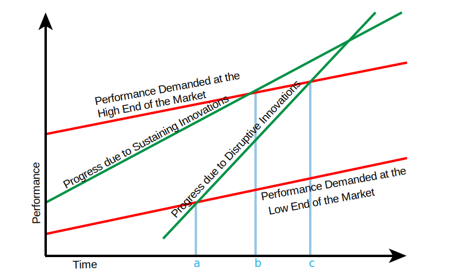
Survey of innovations
Innovations with technology
HTML5 • REST APIs • CSS media queries • oAuth • AJAX • instant search • SVG • augmented reality • Internet of Things • big data • social networks • YouTube • Bootstrap • static site generators • jQuery • YouTube • StackOverflow • Github • continuous integration • LESS & Sass • wikis
Innovations with ideas
decentralization • agile • crowdsourcing • gamification • Cluetrain Manifesto (user-to-user communication) • The Long Tail • "Everything Is Miscellaneous" • semantic web • information architecture • content marketing • transparency • simplicity of design • open source • social coding
Innovations in tech comm
information typing • minimalism • task-based documentation • topic-oriented documentation • DITA • DocOps • Every Page Is Page One • emotional language • personalization • video tutorials • user-generated content • content strategy • single sourcing
Most significant innovation for TC?
Everyone is a technical writer
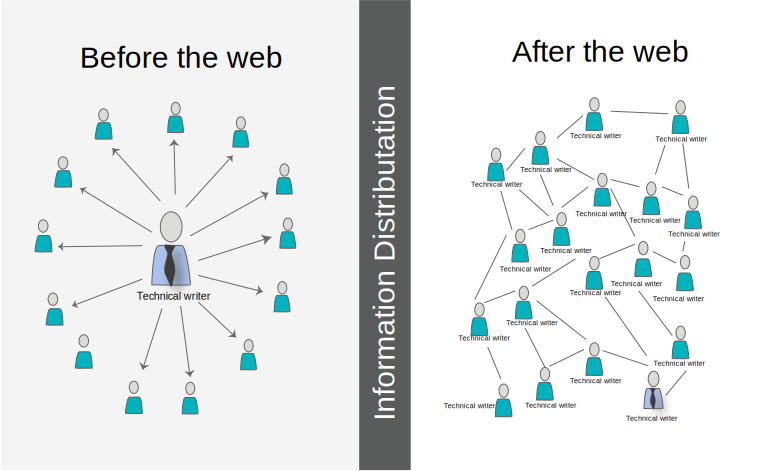
Unofficial technical writer
Job trends for technical writer
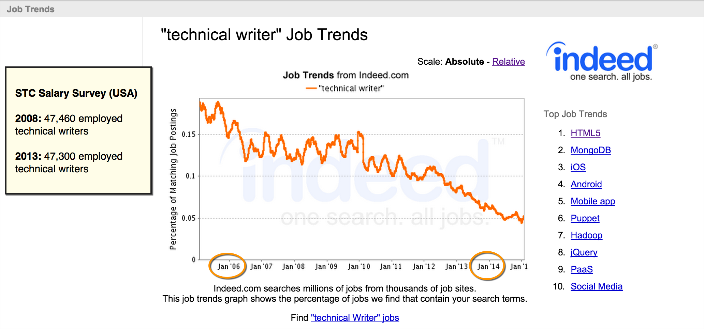
Microsoft and last 5 great innovations
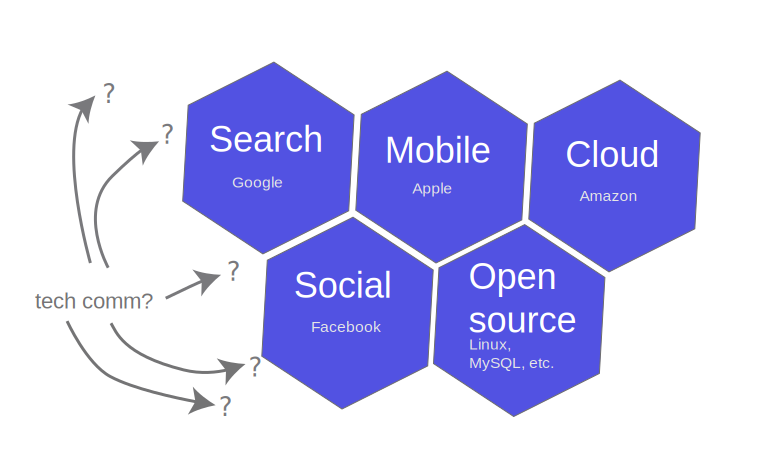
Dilemmas with innovation
How long can you operate at a sub-performing level while you do research and development?
How can you switch models when you're mired in legacy content and systems?
What happens to your career skillset when you invest in an obscure technology?
How do you know if you're just wasting your time?
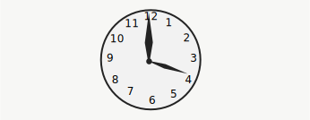
Pressure towards DITA
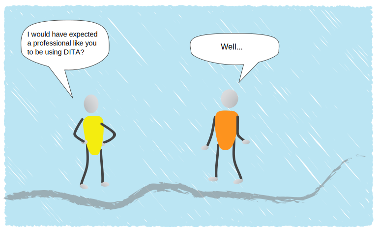
A basic navtab?
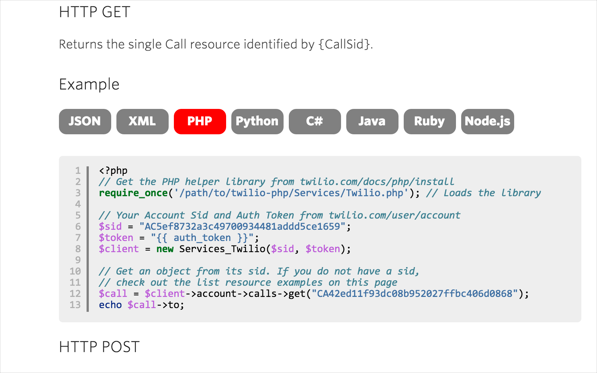
XML and the web: Drifting apart?
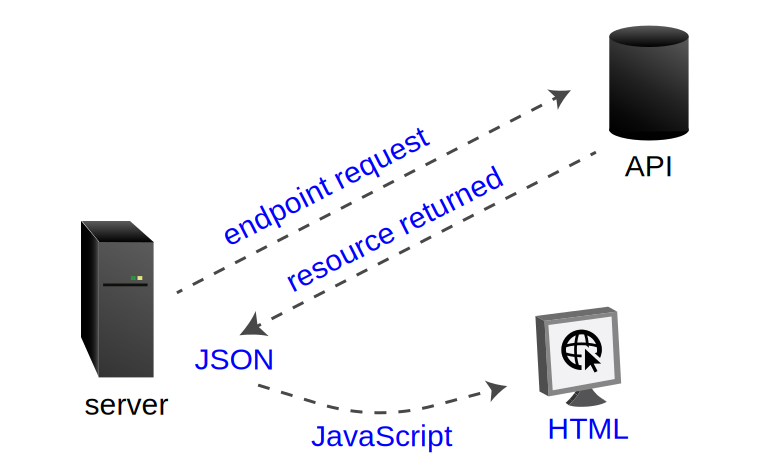
Technologies used by web developers
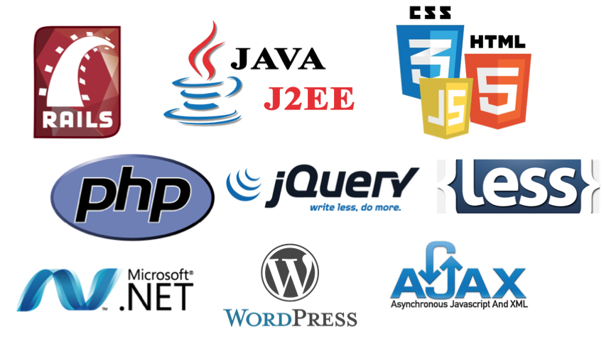
Web tools to know
Bootstrap
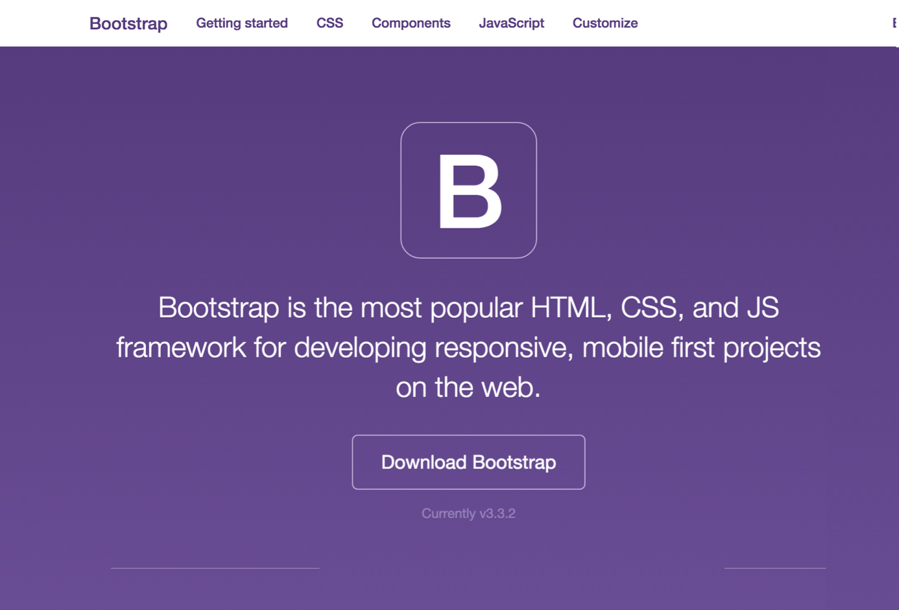
jQuery
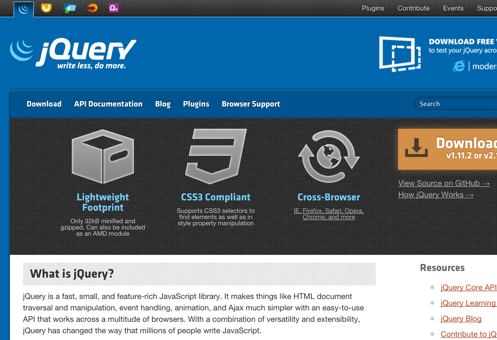
Markdown
The genius of Github and open source
Revolutionary for software development?
"Github, in my humble opinion, is one of the most revolutionary things that has happened to software in 20 years."
— -- Joe Malin
Github repositories
Social coding
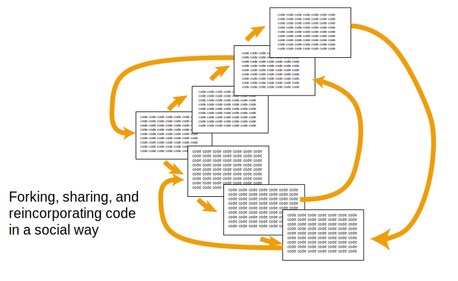
Treating documentation as code
File format:
Text files
Authoring:
Text editor
Building:
Continuous build scripts
Collaborating:
Source control
Versioning:
Source control
Pushing live:
Terminal commands
This slidedeck is just HTML5.
Here's the code for this slide:
<section>
<h2>This slidedeck is just HTML5.</h2>
<p>Here's the code for this slide:</p>
<p><i>So much more satisfying to work in text
file formats.</i></p>
</section>
One person writing from one perspective in one company, especially an outsider to the actual business context of the user, can't possibly cover all the information needs for every user.